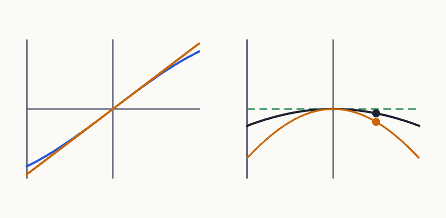

Cómo usar las derivadas para calcular límites que, a primera vista, «no se pueden hacer» ($\tfrac00$, $\tfrac\infty\infty$, $0\cdot\infty$, $\infty-\infty$, $1^\infty$, $0^0$, $\infty^0$), cuándo se puede usar la regla y cuándo no.
Libro oficial: Cálculo para Ingenieros, §2.3 (pp. 81-85)Complementos: Stewart §4.4 (pp. 301-307), Larson §8.7 (pp. 557-563)Ejercicios: E Ej. 2.24–2.33 (pp. 66-72)⏱ ~4 h de estudio
U oficial
S Stewart
L Larson
E ejercicios
X exámenes
P propio
— pasa el ratón (o toca) por cada etiqueta para ver libro y página; en pantallas anchas aparecen en el margen derecho.
La idea del tema en una frase
Definimos la derivada como un límite. Ahora se da la vuelta: la derivada ayuda a calcular límites. Cuando un cociente $\dfrac{f(x)}{g(x)}$ «se atasca» porque arriba y abajo tienden a $0$ (o a $\infty$), basta mirar el cociente de las velocidades de cambio $\dfrac{f'(x)}{g'(x)}$. Con unos pocos trucos, productos, restas y potencias se convierten en un cociente y entran en la misma máquina.
Si solo tienes un rato, llévate esto. El resto de la página lo desarrolla con ejemplos y ejercicios.
Método en 4 pasos
Sustituye y nombra el tipo. ¿Sale $\tfrac00$, $\tfrac\infty\infty$, $0\cdot\infty$, $\infty-\infty$, $1^\infty$, $0^0$ o $\infty^0$? Si sale un número o un $\pm\infty$ «limpio», no hay indeterminación y no se aplica la regla.
Llévalo a $\tfrac00$ o $\tfrac\infty\infty$. Producto: pasa un factor al denominador. Resta: una sola fracción. Potencia: $e^{g\ln f}$.
Comprueba las condiciones, deriva arriba y abajo por separado y simplifica. Si aún sale $\tfrac00$ o $\tfrac\infty\infty$, repite.
Deshaz la transformación (por ejemplo $e^{L}$). Si la regla da vueltas o $\lim_{x\to a}\frac{f'}{g'}$ no existe, cambia de método (dividir por el término dominante).
Qué hago según el tipo
¿Sale $\tfrac00$ o $\tfrac\infty\infty$? $\to$ L'Hôpital (tras comprobar las 3 condiciones).
¿$0\cdot\infty$ o $\infty-\infty$? $\to$ conviértelo en cociente o en una sola fracción.
¿$1^\infty$, $0^0$ o $\infty^0$? $\to$ $e^{g\ln f}$ y devuelve $e^{L}$.
¿Sucesión? $\to$ cambia $n$ por $x$ y aplica lo anterior.
Si al derivar no mejora (da vueltas o el límite de $\frac{f'}{g'}$ no existe) $\to$ otro método (dividir por el término dominante).
Límites de sucesiones y comparación de crecimientos.
Qué cae
En los exámenes resueltos suele ser una pregunta corta de 1 punto con un único límite ($\tfrac00$ y $\tfrac\infty\infty$ son más de la mitad) y, a veces, la regla aparece dentro de un problema de continuidad y derivabilidad. En el libro de ejercicios son E 2.24-2.33. Tabla completa por tipo: pestaña Examen.
U pp.82-85P
Camino de estudio: elige tu nivel
Empieza por «Mínimo»; luego «Completo» y, para nota alta, «Reto». Marca cada ejercicio al terminarlo.
La regla con sus 3 condiciones (apartado 2) y el mapa de decisión (apartado 6).
Las tres recetas: producto a cociente, resta a fracción, potencia $e^{g\ln f}$.
Un ejercicio de cada tipo:
Examen 1 ($\tfrac00$), E 2.28 ($\tfrac\infty\infty$), E 2.27 (la regla «da vueltas»), E 2.30 ($0\cdot\infty$), Examen 3 ($\infty-\infty$), E 2.31 ($0^0$), Examen 5 ($1^\infty$), E 2.33 (sucesión).
Todo el tema (desmarca «Solo lo esencial»), con ampliaciones e interactivo.
E 2.24-2.33, los 4 propios, los 6 exámenes y todas las prácticas.
🟣 Reto · ≈ +1 h
E 2.24 ($1^\infty$, dos caminos), E 2.32 (inducción), Propio 4 (sucesión con parámetro) y Examen 6 (continuidad y derivabilidad).
Verás solo lo esencial; desmarca para ver todo.
0Antes de empezar U pp.81-82
Qué necesitas saber ya
Límites de funciones y su álgebra, con laterales y en el infinito (U §1.4). U p.46
Derivar con soltura: tabla de derivadas y regla de la cadena (U §2.2). U pp.79-80
Continuidad de $\exp$ y $\ln$: si $h\to L$, entonces $e^{h}\to e^{L}$. U p.51
Mapa del tema: qué se pide en los ejercicios y en el examen
Los diez ejercicios de E son cálculo de límites (2.29 es un test y 2.33 una sucesión) y siguen siempre cinco pasos: E pp.66-72
1. Reconocer el tipo sustituyendo. 2. Transformarlo a $\tfrac00$ o $\tfrac\infty\infty$. 3. Comprobar las condiciones. 4. Derivar, simplificar y calcular. 5. Deshacer la transformación (por ejemplo, $e^{L}$).
Ampliación: mini glosario de símbolos
Símbolo
En palabras llanas
indeterminación
Un «atasco»: al sustituir sale un símbolo que no te dice el valor del límite.
$\tfrac00$
Arriba y abajo se acercan a $0$ a la vez. Es una etiqueta de situación, no un número.
$\infty-\infty$
Dos cantidades enormes que se restan: no se sabe cuál gana hasta operar.
$x\to a^+$, $x\to a^-$
$x$ se acerca a $a$ solo por la derecha ($x>a$) o solo por la izquierda ($x<a$).
$f'/g'$
Derivar numerador y denominador por separado. No es la derivada del cociente.
$u\ll v$
«$v$ crece mucho más deprisa que $u$»: el cociente $\frac uv$ tiende a $0$.
1Indeterminaciones: cuando «sustituir» no basta S pp.301-302
Lo que vas a aprender. qué significa que un límite sea «indeterminado» y por qué sustituir no basta en esos casos.
Idea intuitiva: una lucha entre arriba y abajo
En $\lim_{x\to a}\frac{f}{g}$ con $f\to0$ y $g\to0$, el numerador quiere hacer la fracción pequeña y el denominador grande. Todo depende de quién se acerca más rápido a $0$; con $\tfrac\infty\infty$, de quién crece más deprisa. Si gana el numerador sale $\infty$ (o $0$ si gana el denominador) y si empatan sale un número: «$\tfrac00$» depende de las funciones.
S p.302
Tres límites, misma «forma» $\tfrac00$, tres respuestas distintas
Para $x\to0$: $\ \dfrac{3x}{x}\to3$, $\quad\dfrac{x^2}{x}=x\to0$, $\quad\dfrac{x}{x^2}=\dfrac1x\to+\infty$ (por la derecha). En los tres, numerador y denominador tienden a $0$. El símbolo $\tfrac00$ no es un número: es la etiqueta de una situación en la que hay que trabajar más.
P
Formas indeterminadas
Se llaman indeterminadas las situaciones en que, al sustituir el valor al que tiende la variable, aparece uno de los símbolos
$$\frac00,\quad\frac{\infty}{\infty},\quad 0\cdot\infty,\quad \infty-\infty,\quad 1^{\infty},\quad 0^{0},\quad \infty^{0},$$
porque no determinan el valor (ni siquiera la existencia) del límite: hace falta un estudio adicional. La regla se aplica directamente a las dos primeras; las demás se transforman en ellas (apartados 3 y 4).
S pp.301-306L pp.557-563
2La regla de L'Hôpital U pp.82-83
Lo que vas a aprender. la herramienta principal: cómo y cuándo se puede cambiar un cociente de funciones por el cociente de sus derivadas.
La idea
Dos corredores que llegan a la vez
Si $f$ y $g$ son las posiciones de dos corredores y ambos llegan a la meta en el mismo instante, ¿quién va por delante justo antes de llegar? Eso lo dicen sus velocidades $f'$ y $g'$: si la razón de velocidades se acerca a un valor, la razón de posiciones se acerca al mismo. Eso es la regla de L'Hôpital.
P
Ampliación: por qué funciona (idea geométrica e interactivo)
Si $f$ y $g$ son derivables y ambas valen $0$ en $a$, cerca de $a$ cada una se parece a su recta tangente: $f(x)\approx f'(a)(x-a)$ y $g(x)\approx g'(a)(x-a)$. Entonces
$$\frac{f(x)}{g(x)}\approx\frac{f'(a)(x-a)}{g'(a)(x-a)}=\frac{f'(a)}{g'(a)}.$$
El factor $(x-a)$, que producía el «$0$ del atasco», se cancela y queda el cociente de pendientes. Esto es un argumento de plausibilidad (así se demuestra solo para $f,g$ con derivada continua y $g'(a)\neq0$); la demostración general usa el teorema del valor medio de Cauchy. S pp.302-303L p.558

Interactivo propio. Reduce la ventana $w$ alrededor de $a$. A la izquierda, $f$ (azul) y $g$ (naranja), reescaladas a la misma altura, se vuelven casi rectas que pasan por $0$ en $a$ (sus tangentes). A la derecha, el cociente $f/g$ (negro) y el cociente de derivadas $f'/g'$ (naranja discontinua) se pegan a la línea verde, el límite $L$: ahí está la razón de que $\lim_{x\to a}\frac{f}{g}=\lim_{x\to a}\frac{f'}{g'}$. Las rectas discontinuas de la izquierda son las tangentes en $a$ (pendientes $f'(a)$ y $g'(a)$). Los cinco límites son del tipo $\frac00$; en el segundo y el tercero $\frac{f'}{g'}$ sigue siendo $\frac00$ en $a$ y habría que aplicar la regla otra vez. P
El enunciado y las 3 condiciones
Regla de L'Hôpital (enunciado completo)
En palabras: si sale $\tfrac00$ o $\tfrac\infty\infty$, puedes derivar arriba y abajo por separado y mirar ese nuevo límite; si existe, vale lo mismo que el original. Ahora, con todas las condiciones: sean $f,g$ funciones definidas y derivables en un entorno de $a$ (salvo quizá en $a$ mismo) y tales que $g'(x)\neq0$ cerca de $a$ (esto no excluye que $g'(a)=0$). Supongamos que
$$\lim_{x\to a}f(x)=\lim_{x\to a}g(x)=0\qquad\text{o bien}\qquad \lim_{x\to a}f(x)=\pm\infty\ \text{ y }\ \lim_{x\to a}g(x)=\pm\infty ,$$
y que existe el límite del cociente de derivadas, $\displaystyle\lim_{x\to a}\frac{f'(x)}{g'(x)}=\ell\in\overline{\mathbb R}$ (es decir, $\ell$ es un número real, $+\infty$ o $-\infty$). Entonces
$$\lim_{x\to a}\frac{f(x)}{g(x)}=\lim_{x\to a}\frac{f'(x)}{g'(x)}=\ell .$$
Importa el orden lógico: primero hay que saber que existe el límite de $\frac{f'}{g'}$ (es una hipótesis, no una conclusión); si no existe, la regla no dice nada (el límite original puede existir o no; ver Error típico 2).
La regla sigue valiendo si se cambia «$x\to a$» por $x\to a^+$, $x\to a^-$, $x\to+\infty$ o $x\to-\infty$. (Si $a=+\infty$, «cerca de $a$» significa en un intervalo $(M,+\infty)$; si $a=-\infty$, en $(-\infty,M)$.)
U p.82S pp.302-303L p.558
Lista de comprobación antes de derivar:
1 · ¿Es $\tfrac00$ o $\tfrac\infty\infty$? Sustituye. Si no lo es, no se puede usar la regla.
2 · ¿$f$ y $g$ son derivables y $g'\neq0$ cerca de $a$? (puede fallar en el propio $a$.) Se ve con la tabla de derivadas.
3 · ¿Existe $\lim_{x\to a}\frac{f'}{g'}$? Se ve después de derivar. Si sale otra vez $\tfrac00$ o $\tfrac\infty\infty$, repite; si no existe o «da vueltas», busca otro método.
Al derivar, se deriva el numerador y el denominador por separado; no se usa la regla del cociente. S p.303L p.558
Ejemplo 1 (U Ej. 2.8): $\lim_{x\to0}\dfrac{\operatorname{sen}x}{x}$
Tipo. Numerador y denominador tienden a $0$: $\tfrac00$.
Condiciones. $\operatorname{sen}x$ y $x$ son derivables en todo $\mathbb R$ y $(x)'=1\neq0$.
Derivamos. $\displaystyle\lim_{x\to0}\frac{\cos x}{1}=1$. Como este límite existe, el original vale $1$.
Ojo, matiz lógico: para derivar $\operatorname{sen}$ ya se usó que $\lim_{x\to0}\frac{\operatorname{sen}x}{x}=1$; así que este ejemplo sirve para practicar la regla, no para demostrar ese límite (sería un razonamiento circular).
U pp.82-83
Ejemplo 2 (U Ej. 2.9): aplicación reiterada, $\lim_{x\to+\infty}\dfrac{1+e^{x^2}}{x^3}$
Tipo. $\tfrac\infty\infty$. Derivadas fáciles, $(x^3)'=3x^2\neq0$ para $x>0$.
$\displaystyle\lim_{x\to\infty}\frac{1+e^{x^2}}{x^3}=\lim_{x\to\infty}\frac{2xe^{x^2}}{3x^2}=\lim_{x\to\infty}\frac{2e^{x^2}}{3x}$ (tras simplificar una $x$). Sigue siendo $\tfrac\infty\infty$ y cumple las condiciones.
Otra vez: $\displaystyle\lim_{x\to\infty}\frac{2e^{x^2}}{3x}=\lim_{x\to\infty}\frac{4xe^{x^2}}{3}=+\infty$.
El último límite existe (es $+\infty$). Entonces cada límite anterior existe y vale lo mismo: se sube por la cadena de igualdades hasta el original.
U p.83L p.560
Truco de examen: simplifica antes de volver a derivar
Tras derivar, casi siempre se puede simplificar el cociente $\frac{f'}{g'}$ (cancelar un factor $x$, usar $\frac{\operatorname{sen}x}{x}\to1$, etc.). Con frecuencia desaparece el factor que causaba el atasco y ya no hay que derivar otra vez.
S p.304
Quién gana: $\ln x\ \ll\ x^p\ \ll\ a^x$
La regla demuestra una «escalera» que conviene memorizar (para $x\to+\infty$, $p>0$, $a>1$):
$\ln x\ \ll\ x^{p}\ \ll\ a^{x}$
donde $u\ll v$ significa $\frac uv\to0$ (el de la derecha crece mucho más deprisa).
Ampliación: por qué es cierto
Logaritmo frente a potencia: $\displaystyle\lim_{x\to\infty}\frac{\ln x}{x^p}=\lim_{x\to\infty}\frac{1/x}{p\,x^{p-1}}=\lim_{x\to\infty}\frac{1}{p\,x^{p}}=0$ (regla, tipo $\tfrac\infty\infty$, $p>0$). Potencia frente a exponencial: toma un entero $n\ge p$. Para $x\ge1$ se tiene $x^p\le x^n$, así que $\frac{x^p}{a^x}$ queda entre $0$ y $\frac{x^n}{a^x}$, y este último tiende a $0$ (E 2.32). Por tanto $\frac{x^p}{a^x}\to0$ también. Ejemplos en S Ej. 2-3.
S pp.303-304P
Por qué falla sin las condiciones
Error típico 1: aplicar la regla sin que haya indeterminación
Ejemplo de Stewart: $\displaystyle\lim_{x\to\pi^-}\frac{\operatorname{sen}x}{1-\cos x}$. El numerador tiende a $0$, pero el denominador tiende a $1-\cos\pi=2\neq0$: no es $\tfrac00$. Si «se aplica la regla» se obtiene $\frac{\cos x}{\operatorname{sen}x}\to-\infty$ (numerador $\to-1$, denominador $\to0^+$), y eso es falso: el límite vale $0$. Lo correcto es sustituir, porque el denominador no se anula: $\frac{\operatorname{sen}\pi}{1-\cos\pi}=\frac02=0$.
S pp.304-305L p.563
Error típico 2: creer que si $\lim_{x\to a} f'/g'$ no existe, el límite original tampoco
Contraejemplo: $\displaystyle\lim_{x\to+\infty}\frac{x+\operatorname{sen}x}{x}$. Es $\tfrac\infty\infty$ y $g'(x)=1\neq0$, pero $\frac{f'}{g'}=1+\cos x$ no tiene límite en $+\infty$ (oscila entre $0$ y $2$). La regla no dice nada; y sin embargo, directamente, $\frac{x+\operatorname{sen}x}{x}=1+\frac{\operatorname{sen}x}{x}\to1$ (cero por acotada). (Caso distinto, E 2.27: allí el límite de $\frac{f'}{g'}$ sí existe, pero la expresión «da vueltas» y derivar no ayuda.)
P
3Productos y restas: $0\cdot\infty$ y $\infty-\infty$ U pp.83-84
Lo que vas a aprender. la regla solo entiende cocientes: cómo convertir un producto $0\cdot\infty$ o una resta $\infty-\infty$ en un cociente sin cambiar su valor. U p.84
$0\cdot\infty$: pasar un factor «al otro lado»
Cómo lo reconoces: un factor tiende a $0$ y el otro a $\pm\infty$.
Qué haces: pasas uno al denominador como su inverso, $fg=\dfrac f{1/g}$, y queda $\tfrac00$ o $\tfrac\infty\infty$.
Ejemplo mínimo: $x\ln x=\dfrac{\ln x}{1/x}$, de tipo $\tfrac\infty\infty$ cuando $x\to0^+$.
Receta $0\cdot\infty$
Si $f\to0$ y $g\to\pm\infty$, entonces
$$f\cdot g=\frac{f}{1/g}\qquad\text{(tipo }\tfrac00\text{)}\qquad\text{o bien}\qquad f\cdot g=\frac{g}{1/f}\qquad\text{(tipo }\tfrac\infty\infty\text{)}.$$
Se elige la versión cuyo denominador es más fácil de derivar; casi siempre conviene pasar al denominador la potencia ($x^k$), no el logaritmo.
U p.84S p.305L pp.560-561
Ejemplo 3 (U Ej. 2.11): $\lim_{x\to\frac\pi2^-}\left(x-\frac\pi2\right)\operatorname{tg}x$
Tipo. $x-\frac\pi2\to0$ y $\operatorname{tg}x\to+\infty$ (por la izquierda): $0\cdot\infty$.
Cociente. $\left(x-\frac\pi2\right)\operatorname{tg}x=\dfrac{x-\frac\pi2}{1/\operatorname{tg}x}$, de tipo $\tfrac00$ (y $1/\operatorname{tg}x=\frac{\cos x}{\operatorname{sen}x}$).
Derivamos. Derivada del numerador: $1$; derivada del denominador $\left(\frac{\cos x}{\operatorname{sen}x}\right)'=-\frac1{\operatorname{sen}^2x}$. El cociente es $-\operatorname{sen}^2x\to-1$.
Resultado: $-1$.
U p.84
Error típico 3: «cero por lo que sea vale cero»
$0\cdot\infty$ es indeterminado. Con $x\to0^+$: $x\cdot\frac1x=1$, $\ x\cdot\frac2x=2$, $\ x\cdot\frac1{x^2}=\frac1x\to+\infty$, $\ x^2\cdot\frac1x=x\to0$. Hay cuatro ejemplos así, con cuatro respuestas distintas.
L p.560
$\infty-\infty$: hacer la resta
Cómo lo reconoces: dos términos que tienden a $+\infty$ (o los dos a $-\infty$) y se restan.
Qué haces: operas la resta hasta tener una sola fracción (denominador común, racionalizar o factor común).
Ejemplo mínimo: $\dfrac1x-\dfrac1{\operatorname{sen}x}=\dfrac{\operatorname{sen}x-x}{x\operatorname{sen}x}$, de tipo $\tfrac00$ en $0$.
Receta $\infty-\infty$
Si $f\to+\infty$ y $g\to+\infty$ (o restas de infinitos del mismo signo), opera la resta hasta obtener un solo cociente: poniendo denominador común, racionalizando o sacando factor común. Normalmente sale $\tfrac00$ o $\tfrac\infty\infty$. (Si son infinitos de signos opuestos, $\infty+\infty=\infty$ no es indeterminado.)
U p.83S pp.305-306
Ejemplo 4 (U Ej. 2.10): $\lim_{x\to0^+}\left(\dfrac1x-\dfrac1{\operatorname{sen}x}\right)$
Resta: $\dfrac1x-\dfrac1{\operatorname{sen}x}=\dfrac{\operatorname{sen}x-x}{x\operatorname{sen}x}$, de tipo $\tfrac00$. La derivada del denominador, $\operatorname{sen}x+x\cos x$, no se anula cerca de $0$ (por la derecha).
$\displaystyle\lim_{x\to0^+}\frac{\cos x-1}{\operatorname{sen}x+x\cos x}$ es de nuevo $\tfrac00$. Derivamos otra vez: $\displaystyle\lim_{x\to0^+}\frac{-\operatorname{sen}x}{2\cos x-x\operatorname{sen}x}=\frac{0}{2}=0$.
Resultado: $0$.
U pp.83-84S p.306L p.563
4Potencias: $1^\infty$, $0^0$, $\infty^0$ U pp.84-85
Lo que vas a aprender. cómo calcular límites de potencias $f^g$ (en las que la variable está en la base y en el exponente) con un solo truco: la exponencial.
Cómo lo reconoces: $f^g$ con base $\to1$ y exponente $\to\pm\infty$ ($1^\infty$), base $\to0$ y exponente $\to0$ ($0^0$), o base $\to\infty$ y exponente $\to0$ ($\infty^0$).
Qué haces: bajas el exponente con logaritmos, $f^g=e^{g\ln f}$, calculas $L=\lim_{x\to a} g\ln f$ (un $0\cdot\infty$) y devuelves $e^{L}$.
Ejemplo mínimo: $x^x=e^{x\ln x}\to e^{0}=1$ cuando $x\to0^+$.
Receta para $1^\infty$, $0^0$ y $\infty^0$
Escribe, para base positiva, $\ f(x)^{g(x)}=e^{\,g(x)\ln f(x)}$.
Calcula $L=\displaystyle\lim_{x\to a} g(x)\ln f(x)$; es de tipo $0\cdot\infty$. Pásalo a cociente (apartado 3) y aplica L'Hôpital.
Deshaz el logaritmo: $\displaystyle\lim_{x\to a} f^g=e^{L}$ (con $e^{+\infty}=+\infty$ y $e^{-\infty}=0$), porque $\exp$ es continua.
U pp.84-85S pp.306-307L pp.561-562
Error típico 4: olvidar deshacer el logaritmo
Tras calcular $L$, el límite pedido es $e^{L}$, no $L$. U lo avisa expresamente: «un error típico es olvidar que aplicamos logaritmos y dar como valor del límite $0$ en lugar de $1$». (Con $x^{1/x}$, $L=0$ y el límite es $e^0=1$.)
U p.85
Ejemplo 5 (U Ej. 2.12): $\lim_{x\to+\infty}x^{1/x}$ (tipo $\infty^0$)
Base $\to+\infty$, exponente $\to0$: $\infty^0$.
$x^{1/x}=e^{\frac{\ln x}{x}}$ para $x>0$.
$L=\displaystyle\lim_{x\to+\infty}\frac{\ln x}{x}$ es $\tfrac\infty\infty$; por L'Hôpital, $=\lim_{x\to+\infty}\frac{1/x}{1}=0$.
Resultado: $e^{0}=1$.
U p.84
Ejemplo 6 (S Ej. 9): $\lim_{x\to0^+}x^{x}$ (tipo $0^0$)
Es indeterminado: $0^x=0$ para $x>0$ pero $x^0=1$; la base y el exponente «tiran» en direcciones distintas. Con $x^x=e^{x\ln x}$ y $\lim_{x\to0^+}x\ln x=0$ (apartado 3), el límite es $e^0=1$. (Los valores de $y=x^x$ se acercan a $1$.)
S p.307L p.562
Atajo para $1^\infty$: el número $e$
Proposición 2.2
Si $\displaystyle\lim_{x\to a}f(x)=\pm\infty$, entonces $\displaystyle\lim_{x\to a}\left(1+\frac1{f(x)}\right)^{f(x)}=e$.
U p.85
Se usa forzando el exponente a ser la misma $f(x)$ que aparece en la base, y luego propiedades de potencias.
Ejemplo 7 (U Ej. 2.13): $\lim_{x\to\infty}\left(1+\frac1{x^2}\right)^{2x^2}$
Con $f(x)=x^2\to\infty$: $\ \left(1+\frac1{x^2}\right)^{2x^2}=\left[\left(1+\frac1{x^2}\right)^{x^2}\right]^{2}\to e^2$ (la función $t\mapsto t^2$ es continua). Es el mismo límite que el Ejemplo 1.29 de sucesiones (tema 1.2), con $n$ en lugar de $x$, como señala U.
U p.85
Atajo general para $1^\infty$
Si $f\to1$ y $g\to\infty$, entonces $\lim_{x\to a} f^g=e^{\lim_{x\to a} g\,(f-1)}$ (siempre que exista $\lim_{x\to a} g(f-1)$ en $\overline{\mathbb R}$, con $e^{+\infty}=+\infty$ y $e^{-\infty}=0$ como en la receta).
Ampliación: por qué es cierto
Donde $f\neq1$: $g\ln f=g(f-1)\cdot\dfrac{\ln f}{f-1}$, y $\dfrac{\ln t}{t-1}\to1$ cuando $t\to1$ (regla, tipo $\tfrac00$: $\frac{1/t}{1}\to1$); como $f\to1$, el segundo factor tiende a $1$. Donde $f=1$, ambos lados valen $0$. Se usa en E 2.24 y en el propio 3.
P
Lo que NO es indeterminado
Error típico 5: aplicar L'Hôpital a formas determinadas
Estas formas sí determinan el límite (la regla daría resultados falsos):
$\infty+\infty=\infty$, $\quad(-\infty)+(-\infty)=-\infty$, $\quad\infty\cdot\infty=\infty$, $\quad\dfrac{c}{\infty}=0$, $\quad\dfrac{c}{0^{\pm}}=\pm\infty$ (con $c\neq0$; el signo depende del signo de $c$ y del lado), $\quad0^{+\infty}=0$ y $0^{-\infty}=+\infty$ (con base $\to0^+$), $\quad\infty^{\infty}=\infty$.
L p.563PS p.306
5L'Hôpital y sucesiones U p.85
Lo que vas a aprender. cómo usar la regla en sucesiones, que no se pueden derivar, pasando por una función de variable real.
Idea intuitiva
Una sucesión $a_n$ solo está definida para $n=1,2,3,\dots$; no se puede «derivar respecto de $n$». Pero si $a_n=f(n)$ para una función $f$ de variable real, y $f(x)$ tiene límite cuando $x\to\infty$, la sucesión, que es como «mirar $f$ solo en los enteros», tiene el mismo límite.
Proposición 2.3
Si $\displaystyle\lim_{x\to\infty}f(x)=l\in\overline{\mathbb R}$, entonces $\displaystyle\lim_{n\to\infty}f(n)=l$.
U p.85L pp.585-588
Ejemplo 8 (U Ej. 2.14): $\lim_{n\to\infty}\dfrac{\ln n}{n}$
La función asociada es $f(x)=\frac{\ln x}{x}$, de tipo $\tfrac\infty\infty$; por L'Hôpital, $\lim_{x\to\infty}\frac{\ln x}{x}=\lim_{x\to\infty}\frac{1/x}{1}=0$. Por la Prop. 2.3, $\lim_n\frac{\ln n}{n}=0$.
U p.85
Error típico 6: usar la Proposición 2.3 al revés
Que $f(n)\to l$ no implica que $f(x)\to l$. Contraejemplo: $\operatorname{sen}(\pi n)=0$ para todo $n$ (la sucesión tiende a $0$), pero $\operatorname{sen}(\pi x)$ no tiene límite cuando $x\to\infty$. Así que, si $\lim_{x\to\infty}f(x)$ no existe, esta técnica no dice nada de la sucesión.
P
6Tabla-decisión: qué indeterminación tengo y qué hago P
Lo que vas a aprender. qué hacer, en cada caso, en cuanto veas qué símbolo sale al sustituir (mapa de decisión y, desplegable, tabla con el detalle).
Léelo de arriba abajo: en cada pregunta, «no» baja y «sí» te lleva a la acción de la derecha.
Ver la tabla con el detalle de cada caso
Paso 0, siempre: sustituye el valor al que tiende $x$ (o calcula el límite de cada pieza), mira qué «símbolo» sale y busca la fila.
Al sustituir sale…
¿Indeterminado?
Qué hago
$\tfrac{c}{0}$, $c\neq0$
no
Decide el signo de cada lado: $\pm\infty$ (o no existe si los lados difieren). Sin L'Hôpital.
Ya está determinado (lista en el Error típico 5, apartado 4). Nada que hacer.
$\tfrac00$
sí
Primero álgebra (factorizar y simplificar, Ruffini, racionalizar). Si no basta: L'Hôpital tras comprobar las 3 condiciones.
$\tfrac\infty\infty$
sí
Comparar crecimientos ($\ln x\ll x^p\ll a^x$), dividir por el término dominante, o L'Hôpital (reiterado si hace falta). Si al derivar todo se repite, usar la división.
$0\cdot\infty$
sí
Escribir $fg=\dfrac{f}{1/g}$ o $\dfrac{g}{1/f}$; poner abajo el factor cuya inversa sea fácil de derivar (la potencia, no el logaritmo). Luego L'Hôpital.
$\infty-\infty$
sí
Hacer la resta: denominador común, racionalizar o factor común. Sale $\tfrac00$ o $\tfrac\infty\infty$.
$1^\infty$
sí
Prop. 2.2 (base $1+\frac1f$, exponente múltiplo de $f$) o $e^{g\ln f}$ / atajo $e^{\lim_{x\to a} g(f-1)}$. Devolver $e^{L}$.
$0^0$, $\infty^0$
sí
$f^g=e^{g\ln f}$; el exponente es $0\cdot\infty$ (fila anterior). Devolver $e^{L}$.
Sucesión $a_n$ con indeterminación
sí
Cambiar $n$ por $x$: $f(x)$; calcular $\lim_{x\to\infty}f(x)$ (L'Hôpital) y aplicar Prop. 2.3.
Tras derivar, $\lim_{x\to a}\frac{f'}{g'}$ no existe o la expresión «da vueltas»
—
La regla no concluye. Cambiar de método (dividir por el dominante, acotar, álgebra).
Orden de ataque recomendado en el examen
Sustituir y nombrar el tipo.
¿Se puede resolver con álgebra o comparando crecimientos? Hazlo así (suele ser más corto y más seguro).
Si no, transformar a $\tfrac00$ o $\tfrac\infty\infty$.
Escribir las condiciones de la regla (aunque sea en una línea).
Derivar, simplificar, calcular. Devolver la transformación si la hubo.
7Practica P
Lo que vas a aprender. a resolver tú solo un ejemplo de cada tipo. Intenta cada uno antes de abrir la pista; empieza por los ★ (los ★★ son ampliación).
Sustituye $x=0$ arriba y abajo: ¿qué forma sale? Si es $\tfrac00$, deriva numerador y denominador por separado.
Ver solución
Tipo: $\operatorname{sen}0=0$ y $\ln1=0$, así que es $\tfrac00$.
Condiciones: $f(x)=\operatorname{sen}3x$ y $g(x)=\ln(1+x)$ son derivables cerca de $0$, y $g'(x)=\frac1{1+x}\neq0$ allí.
Derivadas: $f'(x)=3\cos3x$ y $g'(x)=\frac1{1+x}$.
Límite del cociente de derivadas: $\displaystyle\lim_{x\to0}\frac{3\cos3x}{1/(1+x)}=\lim_{x\to0}3(1+x)\cos3x=3$. Como existe, la regla da el mismo valor para el límite pedido.
Es $\tfrac{\infty}{\infty}$. Deriva y fíjate en que lo que queda es un límite que ya conoces.
Ver solución
Tipo: $(\ln x)^2\to+\infty$ y $x\to+\infty$: $\tfrac\infty\infty$. Son derivables en $(0,\infty)$ y $g'(x)=1\neq0$.
Derivadas: $f'(x)=2\ln x\cdot\frac1x$ (regla de la cadena) y $g'(x)=1$; el cociente es $\dfrac{2\ln x}{x}$.
Este nuevo límite vuelve a ser $\tfrac\infty\infty$; aplicamos la regla otra vez: $\displaystyle\lim_{x\to+\infty}\frac{2\ln x}{x}=\lim_{x\to+\infty}\frac{2/x}{1}=0$.
Como el último límite existe, cada aplicación anterior queda justificada (de atrás hacia delante).
Recuerda que $\operatorname{arctg}x\to\frac\pi2$ cuando $x\to+\infty$. Pasa $x$ al denominador como $\frac1x$ (deja arriba el factor cuya derivada es sencilla).
Ver solución
Tipo: $x\to+\infty$ y $\frac\pi2-\operatorname{arctg}x\to0$: $0\cdot\infty$.
Transformación: $\dfrac{\frac\pi2-\operatorname{arctg}x}{1/x}$, tipo $\tfrac00$.
Escribe $x^{\operatorname{sen}x}=e^{\operatorname{sen}x\,\ln x}$ y calcula aparte el límite del exponente (un $0\cdot\infty$).
Ver solución
Tipo: base $x\to0^+$, exponente $\operatorname{sen}x\to0$: $0^0$.
Logaritmo: $L=\displaystyle\lim_{x\to0^+}\operatorname{sen}x\,\ln x$, tipo $0\cdot\infty$; se escribe $\dfrac{\ln x}{1/\operatorname{sen}x}$, tipo $\tfrac{\infty}{\infty}$.
No se deriva respecto de $n$: cambia $n$ por $x\in\mathbb R$, calcula el límite de la función cuando $x\to+\infty$ y vuelve a la sucesión con la Prop. 2.3.
Ver solución
Función asociada: $f(x)=\dfrac{\ln x}{\ln(x+1)}$, con $f(n)=a_n$.
Pasa a la función $f(x)=x^2\left(1-\cos\frac1x\right)$ y cambia de variable $t=\frac1x$ ($t\to0^+$): queda un cociente $\tfrac00$.
Ver solución
Función asociada: $f(x)=x^2\left(1-\cos\frac1x\right)$, tipo $\infty\cdot0$ cuando $x\to+\infty$.
Cambio $t=\frac1x$ (cuando $x\to+\infty$, $t\to0^+$): $f=\dfrac{1-\cos t}{t^2}$, tipo $\tfrac00$.
L'Hôpital: $\dfrac{\operatorname{sen}t}{2t}\to\dfrac12$ (por $\frac{\operatorname{sen}t}{t}\to1$, o aplicando la regla otra vez: $\frac{\cos t}{2}\to\frac12$).
Así $\displaystyle\lim_{x\to+\infty}f(x)=\frac12$ y, por la Prop. 2.3, la sucesión tiene el mismo límite.
Resultado: $\dfrac12$
8Errores típicos y autoevaluación P
Lo que vas a aprender. a detectar tus fallos antes del examen: 10 preguntas rápidas; cada una es un error típico, con su explicación al responder.
Al sustituir sale $\frac11$: no hay indeterminación y la regla no se puede usar. El límite es $1$.
2. (V/F) Para aplicar L'Hôpital a $\frac fg$ hay que derivar el cociente con la regla del cociente, $\left(\frac fg\right)'=\frac{f'g-fg'}{g^2}$.
Se derivan numerador y denominador por separado: se estudia $\frac{f'}{g'}$, no $\left(\frac fg\right)'$.
3. (V/F) Si $\displaystyle\lim_{x\to a}\frac{f'(x)}{g'(x)}$ no existe, entonces $\displaystyle\lim_{x\to a}\frac{f(x)}{g(x)}$ tampoco existe.
Con $f(x)=x^2\operatorname{sen}\frac1x$, $g(x)=\operatorname{sen}x$ en $a=0$: $\frac{f'}{g'}=\frac{2x\operatorname{sen}(1/x)-\cos(1/x)}{\cos x}$ no tiene límite, pero $\frac fg=\frac{x}{\operatorname{sen}x}\cdot x\operatorname{sen}\frac1x\to1\cdot0=0$. En ese caso la regla no dice nada.
4. (V/F) Un límite de tipo $0\cdot\infty$ vale siempre $0$, porque «cero por cualquier cosa es cero».
$0\cdot\infty$ es indeterminado: $\lim_{x\to+\infty}x\operatorname{sen}\frac2x=2$ (práctica c1). Lo mismo pasa con $1^\infty$ y con $\infty-\infty$ (no valen $1$ ni $0$ «por defecto»). Hay que pasarlo a cociente.
5. (Elige) Al calcular $\lim_{x\to a}f^g$ tomando logaritmos se obtiene $\lim_{x\to a}g\ln f=0$. El límite pedido es:
El límite pedido es $e^{L}=e^0=1$. Responder $0$ es olvidar deshacer el logaritmo.
6. (V/F) Toda forma $1^\infty$ vale $1$, porque $1$ elevado a cualquier cosa es $1$.
La base solo tiende a $1$; por ejemplo $\lim_{x\to0}(1+\operatorname{sen}x)^{1/x}=e$ (práctica e1). Hay que calcular $e^{\lim_{x\to a} g(f-1)}$.
Es $0^{+\infty}$, que no es indeterminación: $\frac1x\ln x\to(+\infty)(-\infty)=-\infty$ y $e^{-\infty}=0$. Ojo al signo: con exponente $\to-\infty$ ($x^{-1/x}$, forma $0^{-\infty}$) el resultado sería $+\infty$.
8. (V/F) Como $\operatorname{sen}(\pi n)=0$ para todo $n\in\mathbb N$, la Prop. 2.3 asegura que $\lim_{x\to\infty}\operatorname{sen}(\pi x)=0$.
La Prop. 2.3 va solo en un sentido: del límite de la función al de la sucesión. Aquí la sucesión tiende a $0$, pero $\operatorname{sen}(\pi x)$ oscila entre $-1$ y $1$ y no tiene límite.
No es indeterminado: arriba vale $2$ y abajo $\ln x\to0$ con signo negativo, porque para $x<1$ se tiene $\ln x<0$. Con $\tfrac{c}{0^\pm}$ hay que decidir el signo de cada lado antes de escribir $+\infty$ o $-\infty$ (como en E 2.28).
10. (V/F) En $\displaystyle\lim_{x\to0}\frac{\ln(1+x)-x}{1-\sqrt{1-x^2}}$ no se puede usar L'Hôpital porque el denominador $g(x)=1-\sqrt{1-x^2}$ tiene $g'(0)=0$.
La regla exige $g'(x)\neq0$ cerca de $a$ (para $x\neq a$), no en $a$. Aquí $g'(x)=\frac{x}{\sqrt{1-x^2}}$ solo se anula en $x=0$, así que se puede aplicar; el límite vale $-1$ (E 2.25).
9Ejercicios del libro, resueltos E pp.66-72
Todos los límites se han comprobado con cálculo simbólico; la numeración es la de E.
Ver el orden recomendado, de fácil a difícil
Orden
Ejercicio
Tipo
Resultado
1
2.26
$\tfrac00$ (polinomios)
$-\tfrac34$
2
2.25
$\tfrac00$ (raíz y logaritmo)
$-1$
3
2.28
$\tfrac\infty\infty$ lateral
$0$
4
2.30
$0\cdot\infty$
$0$
5
2.27
$\tfrac\infty\infty$ donde la regla «da vueltas»
$1$
6
2.31
$0^0$
$1$
7
2.29
$\infty^0$ (test)
b) $1$
8
2.24
$1^\infty$
$\sqrt e$
9
2.32
$\tfrac\infty\infty$ reiterado $n$ veces
$0$
10
2.33
$\tfrac00$ en una sucesión
$1$
★★★ DifícilEjercicio 2.24 · $1^\infty$E pp.66-67
Calcula el valor de $\displaystyle\lim_{x\to+\infty}\left(\frac{\ln x^2+1}{2\ln x}\right)^{\ln x}$.
Aquí $\ln x^2+1$ significa $\ln(x^2)+1$.
Ver solución paso a paso
Antes de calcular
Qué me piden
Hallar el límite de una potencia $\left(\frac{\ln x^2+1}{2\ln x}\right)^{\ln x}$ cuando $x\to+\infty$.
Cómo lo pienso
La base se acerca a $1$ y el exponente crece sin parar: forma $1^\infty$. Hay una carrera entre «base casi 1» y «exponente enorme»; el truco es escribir la base como $1+\frac1{\text{algo grande}}$, que es justo el límite que define $e$.
Qué uso
Proposición 2.2: $\left(1+\frac1f\right)^f\to e$ si $f\to\pm\infty$ — ver teoría (U p.85).
Por dónde empiezo
Escribir $\ln x^2=2\ln x$ y la base como $1+\frac1{2\ln x}$.
Receta: $1^\infty$: escribe la base como $1+\frac1f$ y fuerza el exponente a ser $f\cdot(\text{algo})$; el límite es $e^{\lim_{x\to a}(\text{algo})}$. Atajo: $\lim_{x\to a} f^g=e^{\lim_{x\to a} g(f-1)}$; aquí ($a=+\infty$) $g(f-1)=\ln x\cdot\frac1{2\ln x}=\frac12$.
Mismo método que Examen 5 ($1^\infty$).
Ver resolución completa paso a paso
Camino 1: el número $e$ (Prop. 2.2 de U).
Tipo. Como $\ln(x^2)=2\ln x$, la base es $\dfrac{2\ln x+1}{2\ln x}=1+\dfrac1{2\ln x}\to1$ y el exponente $\ln x\to+\infty$: $1^{+\infty}$.
Forzar la forma de la Prop. 2.2. Tomamos $f(x)=\ln x^2=2\ln x\to+\infty$. El exponente es $\ln x=\frac12\ln x^2$, luego
$$\left(1+\frac1{\ln x^2}\right)^{\ln x}=\left[\left(1+\frac1{\ln x^2}\right)^{\ln x^2}\right]^{1/2}$$
(propiedad $(b^c)^d=b^{cd}$, válida para $b>0$).
Límite. Lo de dentro tiende a $e$ (Prop. 2.2) y $t\mapsto t^{1/2}$ es continua en $e$: el límite es $e^{1/2}=\sqrt e$.
Camino 2: logaritmos y L'Hôpital (la «Nota» de E).
La expresión es $e^{h(x)}$ con $h(x)=\ln x\cdot\ln\!\left(1+\frac1{\ln x^2}\right)$, de tipo $+\infty\cdot0$.
Cociente: $h(x)=\dfrac{\ln\left(1+\frac1{\ln x^2}\right)}{1/\ln x}$, de tipo $\tfrac00$.
Por continuidad de $\exp$: límite $=e^{1/2}=\sqrt e$.
La función se acerca muy despacio (el logaritmo crece lento) a la recta punteada $y=\sqrt e\approx1{,}65$, el valor del límite. Pasa el ratón por la gráfica (o toca; o usa ← →) para leer las coordenadas. P
Teoría: U p.85
★★ MedioEjercicio 2.25 · $\tfrac00$ con raíz y logaritmoE p.67
Calcula el valor de $\displaystyle\lim_{x\to0}\frac{\ln(1+x)-x}{1-\sqrt{1-x^2}}$.
Arriba y abajo valen $0$ en $x=0$: no sé quién gana. La regla compara «a qué velocidad» se acercan a $0$ comparando sus derivadas. Conviene simplificar tras derivar, porque el cociente de derivadas se arregla mucho.
Qué uso
Regla de L'Hôpital: en $\tfrac00$, $\lim_{x\to a}\frac fg=\lim_{x\to a}\frac{f'}{g'}$ si este existe — ver teoría (U p.82).
Por dónde empiezo
Comprobar que sale $\tfrac00$ y que $g'$ no se anula cerca de $0$; luego derivar numerador y denominador por separado.
Receta: tras derivar, simplifica el cociente de derivadas antes de sustituir: el factor que producía el $0/0$ suele cancelarse y no hace falta derivar otra vez.
Ver resolución completa paso a paso
Tipo. Numerador: $\ln1-0=0$. Denominador: $1-\sqrt1=0$. Ambas son continuas en $0$: $\tfrac00$.
Hipótesis. En $(-1,1)$ ambas son derivables. $f'(x)=\dfrac1{1+x}-1=\dfrac{-x}{1+x}$ y $g'(x)=-\dfrac1{2\sqrt{1-x^2}}\cdot(-2x)=\dfrac{x}{\sqrt{1-x^2}}$. $g'(x)=0$ solo en $x=0$; luego $g'(x)\neq0$ en $(-1,1)\setminus\{0\}$, que es lo que exige U («esta última condición no excluye que $g'(a)$ pueda ser $0$»).
Simplificar antes de pasar al límite. Para $x\neq0$: $\dfrac{f'}{g'}=\dfrac{-x}{1+x}\cdot\dfrac{\sqrt{1-x^2}}{x}=-\dfrac{\sqrt{1-x^2}}{1+x}$. Podemos cancelar $x$ porque en un límite nunca se toma $x=0$.
Límite. La última función es continua en $0$ y vale $-1$.
Conclusión. El límite pedido es $-1$.
En $x=0$ la fracción es $\frac00$ y no hay punto de la gráfica; el rombo marca el valor $-1$ al que se acerca por los dos lados. Pasa el ratón por la gráfica (o toca; o usa ← →) para leer las coordenadas. P
Error típico
Decir «$g'(0)=0$, luego no se puede aplicar»: lo que importa es $g'\neq0$ cerca de $0$, no en $0$.
Teoría: U p.82
★ BásicoEjercicio 2.26 · $\tfrac00$ con polinomiosE p.67
Calcula el valor de $\displaystyle\lim_{x\to-1}\dfrac{x^5+x^4-x^2+1}{x^4-1}$.
Son polinomios y ambos se anulan en $-1$: tienen un factor común $(x+1)$ que causa el $\tfrac00$. Derivar equivale a «quitar» ese factor y mirar lo que queda.
Qué uso
Regla de L'Hôpital: en $\tfrac00$, $\lim_{x\to a}\frac fg=\lim_{x\to a}\frac{f'}{g'}$ — ver teoría (U p.82).
Por dónde empiezo
Sustituir $x=-1$ en numerador y denominador y comprobar $\tfrac00$.
Receta: cociente de polinomios con $0/0$ en $x=a$: o factorizas $(x-a)$ por Ruffini y simplificas, o derivas arriba y abajo una vez y sustituyes. Ambos caminos deben coincidir.
Ver resolución completa paso a paso
Sustituir primero. Numerador en $x=-1$: $-1+1-1+1=0$. Denominador: $1-1=0$. Son polinomios (continuos): $\tfrac00$. No vale el «cociente de límites» porque el del denominador es $0$.
Condiciones. Ambos son polinomios, derivables en $\mathbb R$; $g'(x)=4x^3$ solo se anula en $x=0$, así que $g'\neq0$ en un entorno de $-1$ (por ejemplo en $(-2,0)$).
Derivar (numerador y denominador por separado): $f'(x)=5x^4+4x^3-2x$, $\ g'(x)=4x^3$.
Límite del cociente de derivadas. El denominador vale $4(-1)^3=-4\neq0$, basta sustituir: $\ \dfrac{5-4+2}{-4}=-\dfrac34$.
Conclusión. Como este límite existe, el original vale $-\dfrac34$.
Comprobación sin L'Hôpital. $x=-1$ anula a ambos, luego $(x+1)$ divide a los dos (Ruffini): $x^5+x^4-x^2+1=(x+1)(x^4-x+1)$ y $x^4-1=(x+1)(x-1)(x^2+1)$. Simplificando, $\dfrac{x^4-x+1}{(x-1)(x^2+1)}\to\dfrac{3}{(-2)(2)}=-\dfrac34$. Coincide.
En $x=-1$ hay un hueco (el cociente es $\frac00$) al que la gráfica se acerca con valor $-\frac34$; en $x=1$ el denominador se anula y el numerador no: asíntota vertical. Pasa el ratón por la gráfica (o toca; o usa ← →) para leer las coordenadas. P
Teoría: U p.82
★★ MedioMínimoEjercicio 2.27 · cuando L'Hôpital da vueltasE p.68
Calcula el valor del límite $\displaystyle\lim_{x\to+\infty}\frac{\operatorname{sen}x+e^x}{\cos x+e^x}$.
Ver solución paso a paso
Antes de calcular
Qué me piden
Calcular $\lim_{x\to+\infty}\frac{\operatorname{sen}x+e^x}{\cos x+e^x}$ (y decidir si L'Hôpital sirve).
Cómo lo pienso
$e^x$ crece tanto que $\operatorname{sen}x$ y $\cos x$, siempre entre $-1$ y $1$, son migajas. Derivar solo cambia seno por coseno y vuelve al principio: la regla «da vueltas» y no resuelve. Hay que sacar factor común $e^x$.
Qué uso
Si la regla «da vueltas», no sirve: se divide por $e^x$ y se usa «cero por acotada» — ver teoría (U p.82 y pp.45-46).
Por dónde empiezo
Aplicar la regla una vez, ver que reaparecen seno y coseno, y abandonarla: dividir arriba y abajo por $e^x$.
Receta: si al derivar reaparece la misma estructura (senos y cosenos que rotan, exponenciales que se reproducen), abandona L'Hôpital y divide por el término dominante.
Ver resolución completa paso a paso
Tipo. $e^x\to+\infty$ y $\operatorname{sen}x,\cos x\in[-1,1]$; así $\operatorname{sen}x+e^x\ge e^x-1\to+\infty$ y lo mismo el denominador: $\tfrac\infty\infty$.
Intento con L'Hôpital. Las condiciones se cumplen ($g'(x)=-\operatorname{sen}x+e^x\ge e^x-1>0$ para $x>0$), pero $\ \dfrac{f'}{g'}=\dfrac{\cos x+e^x}{-\operatorname{sen}x+e^x}$, $\ \dfrac{f''}{g''}=\dfrac{-\operatorname{sen}x+e^x}{-\cos x+e^x},\dots$ Tras cuatro derivaciones se vuelve al cociente de partida: no simplifica nada.
Otro camino: dividir por el término dominante $e^x$ arriba y abajo: $\ \dfrac{\operatorname{sen}x+e^x}{\cos x+e^x}=\dfrac{\operatorname{sen}x\cdot e^{-x}+1}{\cos x\cdot e^{-x}+1}$.
Cada trozo. $e^{-x}\to0$ y $\operatorname{sen}x,\cos x$ están acotadas: $\operatorname{sen}x\,e^{-x}\to0$ y $\cos x\,e^{-x}\to0$ («cero por acotada»).
Álgebra de límites (el denominador tiende a $1\neq0$): el límite es $\dfrac{0+1}{0+1}=1$.
Las oscilaciones del seno y del coseno se van haciendo insignificantes frente a $e^x$ y la gráfica se pega a $y=1$, aunque L'Hôpital no sirva aquí. Pasa el ratón por la gráfica (o toca; o usa ← →) para leer las coordenadas. P
Cuando $x$ se acerca a $\frac\pi2$ por la izquierda, $\cos x\to0^+$: el logaritmo cae a $-\infty$ y la tangente sube a $+\infty$. Es $\tfrac\infty\infty$ y hay que ver cuál crece más rápido; derivar ayuda a compararlos. Solo vale el límite lateral porque a la derecha $\cos x<0$.
Qué uso
Regla de L'Hôpital, válida con límites laterales: $\lim_{x\to a}\frac fg=\lim_{x\to a}\frac{f'}{g'}$ — ver teoría (U p.82).
Por dónde empiezo
Comprobar el dominio $(0,\pi/2)$ y el tipo $\tfrac{+\infty}{+\infty}$; derivar numerador y denominador.
Receta: en un límite lateral hacia un punto donde algo se anula, determina primero el signo de lo que tiende a $0$ ($0^+$ o $0^-$) para saber si cada trozo va a $+\infty$ o a $-\infty$.
Ver resolución completa paso a paso
Dominio. Para $x\in(0,\pi/2)$, $\cos x>0$ y $\ln(\cos x)$ está definido: tiene sentido el límite por la izquierda.
Tipo. Cuando $x\to\frac\pi2^-$, $\cos x\to0^+$, luego $\ln(\cos x)\to-\infty$ y el numerador $2-\ln(\cos x)\to+\infty$. Además $\operatorname{tg}x=\frac{\operatorname{sen}x}{\cos x}\to\frac1{0^+}=+\infty$. Es $\tfrac{+\infty}{+\infty}$.
Condiciones. Ambas son derivables en $(0,\pi/2)$. $f'(x)=-\dfrac1{\cos x}\cdot(-\operatorname{sen}x)=\dfrac{\operatorname{sen}x}{\cos x}$ y $g'(x)=\dfrac1{\cos^2x}$, que nunca se anula.
Cociente de derivadas. Dividir entre $\frac1{\cos^2x}$ es multiplicar por $\cos^2x$: $\ \dfrac{f'}{g'}=\dfrac{\operatorname{sen}x}{\cos x}\cdot\cos^2x=\operatorname{sen}x\cos x\to1\cdot0=0$.
Conclusión. El límite vale $0$.
Interpretación: el numerador crece como $-\ln(\cos x)$ (muy despacio) y el denominador como $\frac1{\cos x}$ (como una potencia): gana el denominador.
Para $x<\frac\pi2$ el cociente decrece hacia $0$: $\operatorname{tg}x$ crece mucho más deprisa que $-\ln(\cos x)$. Pasado $\frac\pi2$ el coseno es negativo y no hay gráfica. Pasa el ratón por la gráfica (o toca; o usa ← →) para leer las coordenadas. P
Teoría: U p.82
★ BásicoEjercicio 2.29 · $\infty^0$ (test)E p.69
Señala el valor del límite $\displaystyle\lim_{x\to+\infty}x^{\frac1{x+1}}$: a) $0$. b) $1$. c) $e$. d) $e^e$.
Ver solución paso a paso
Antes de calcular
Qué me piden
Elegir entre $0,1,e,e^e$ el valor de $\lim_{x\to+\infty}x^{1/(x+1)}$.
Cómo lo pienso
La base crece pero el exponente $\frac1{x+1}$ se hunde hacia $0$: forma $\infty^0$. Tirar a un lado o a otro depende de quién manda; pasando a exponencial se estudia solo el exponente.
Qué uso
Potencias: $f^g=e^{g\ln f}$ — ver teoría (U pp.84-85).
Por dónde empiezo
Escribir $x^{1/(x+1)}=e^{\frac{\ln x}{x+1}}$ y estudiar $\frac{\ln x}{x+1}$.
Receta: $\infty^0\Rightarrow e^{\lim_{x\to+\infty} g\ln f}$; «logaritmo entre potencia de $x$» tiende siempre a $0$.
Mismo método que Ej. 2.31 (potencia con $e^{g\ln f}$).
Ver resolución completa paso a paso
Tipo. Base $\to+\infty$, exponente $\frac1{x+1}\to0$: $\infty^0$.
Exponencial. Para $x>0$: $x^{\frac1{x+1}}=e^{\frac{\ln x}{x+1}}$.
Exponente, de tipo $\tfrac\infty\infty$ (derivables en $(0,\infty)$ y $(x+1)'=1\neq0$): $\displaystyle\lim_{x\to+\infty}\frac{\ln x}{x+1}=\lim_{x\to+\infty}\frac{1/x}{1}=0$.
Continuidad de $\exp$: el límite es $e^0=1$. Respuesta b).
Descarte rápido en un test: para $x>1$ la base es $>1$ y el exponente positivo, luego $x^{1/(x+1)}>1$: la a) es imposible; y como el exponente de $e$ tiende a $0$, no puede salir $e$ ni $e^e$.
La gráfica sube, alcanza un máximo y baja despacio hacia la recta $y=1$: el límite es $1$ (respuesta b). Pasa el ratón por la gráfica (o toca; o usa ← →) para leer las coordenadas. P
Calcula el valor de $\displaystyle\lim_{x\to0^+}x\ln x$.
Ver solución paso a paso
Antes de calcular
Qué me piden
Calcular $\lim_{x\to0^+}x\ln x$.
Cómo lo pienso
Un factor tiende a $0$ y el otro a $-\infty$: $0\cdot\infty$ no es una indeterminación a la que se aplique la regla. Pasamos uno de los factores al denominador como inverso para obtener un cociente $\tfrac\infty\infty$.
Qué uso
Producto $0\cdot\infty$: $fg=\dfrac f{1/g}$ — ver teoría (U p.84).
Por dónde empiezo
Escribir $x\ln x=\frac{\ln x}{1/x}$.
Receta: $0\cdot\infty$: escribe $fg=\dfrac g{1/f}$ poniendo en el denominador el factor cuya inversa se deriva fácil (la potencia $x^k$, casi nunca el logaritmo).
Ver resolución completa paso a paso
Tipo. $x\to0^+$ y $\ln x\to-\infty$: $0\cdot(-\infty)$. L'Hôpital no se aplica a productos.
Convertir en cociente. Pasamos al denominador el factor $x$: $x\ln x=\dfrac{\ln x}{1/x}$, de tipo $\tfrac{-\infty}{+\infty}$.
Condiciones. $\ln x$ y $\frac1x$ son derivables en $(0,\infty)$ y $\left(\frac1x\right)'=-\frac1{x^2}\neq0$.
La otra elección (mala). $x\ln x=\dfrac{x}{1/\ln x}$ es $\tfrac00$, pero al derivar sale $-x(\ln x)^2$, más complicado que el de partida.
Para $x\to0^+$ la gráfica baja hasta un mínimo ($x=\frac1e$, $y=-\frac1e$) y vuelve a subir hacia $(0,0)$: $x$ gana a $\ln x$. Pasa el ratón por la gráfica (o toca; o usa ← →) para leer las coordenadas. P
Teoría: U p.84 Es exactamente S p.305
★★ MedioMínimoEjercicio 2.31 · $0^0$E p.70
Calcula el valor de $\displaystyle\lim_{x\to0^+}x^{x^2}$.
Ver solución paso a paso
Antes de calcular
Qué me piden
Calcular $\lim_{x\to0^+}x^{x^2}$.
Cómo lo pienso
Una base que tiende a $0$ elevada a un exponente que también tiende a $0$ ($0^0$) no tiene un valor obvio. Con $f^g=e^{g\ln f}$ la potencia se convierte en un producto cuyo comportamiento sí sabemos estudiar.
Qué uso
Potencias: $f^g=e^{g\ln f}$ — ver teoría (U pp.84-85).
Por dónde empiezo
Escribir $x^{x^2}=e^{x^2\ln x}$ y calcular $\lim_{x\to0^+} x^2\ln x$.
Receta: $f^g$ con $0^0$, $\infty^0$ o $1^\infty$: escribe $f^g=e^{g\ln f}$, calcula $L=\lim_{x\to a} g\ln f$ (será $0\cdot\infty$) y el resultado es $e^{L}$ (con $e^{+\infty}=+\infty$, $e^{-\infty}=0$).
Ver resolución completa paso a paso
Tipo. Base $x\to0^+$, exponente $x^2\to0$: $0^0$.
Escribir como exponencial. Para $x>0$: $x^{x^2}=e^{\ln(x^{x^2})}=e^{x^2\ln x}$.
Límite del exponente ($0\cdot(-\infty)$), pasado a cociente como en 2.30: $\displaystyle\lim_{x\to0^+}x^2\ln x=\lim_{x\to0^+}\frac{\ln x}{1/x^2}=\lim_{x\to0^+}\frac{1/x}{-2/x^3}=\lim_{x\to0^+}\left(-\frac{x^2}{2}\right)=0$. (Condiciones: $\tfrac{-\infty}{+\infty}$, derivables en $(0,\infty)$, $(x^{-2})'=-2x^{-3}\neq0$.)
Volver a la potencia. Como $\exp$ es continua, $\lim_{x\to0^+} e^{x^2\ln x}=e^0=1$.
La gráfica, definida para $x>0$, se acerca a $(0,1)$ cuando $x\to0^+$: el límite $0^0$ vale $1$. Pasa el ratón por la gráfica (o toca; o usa ← →) para leer las coordenadas. P
Teoría: U pp.84-85S p.307L p.562
★★★ DifícilEjercicio 2.32 · potencia frente a exponencialE p.70
Calcula para $n\in\mathbb N$ y $a>1$ el límite $\displaystyle\lim_{x\to+\infty}\frac{x^n}{a^x}$.
Ver solución paso a paso
Antes de calcular
Qué me piden
Probar que $\lim_{x\to+\infty}\frac{x^n}{a^x}$ vale lo mismo para todo $n\in\mathbb N$ y $a>1$, y hallarlo.
Cómo lo pienso
Una exponencial con base mayor que $1$ crece más rápido que cualquier potencia. Cada derivada baja un grado de la potencia sin tocar la exponencial, así que tras $n$ pasos el numerador es una constante y gana $a^x$.
Qué uso
Regla reiterada: $(x^n)'=nx^{n-1}$, $(a^x)'=a^x\ln a$ — ver teoría (U pp.82-83).
Por dónde empiezo
Verificar $\tfrac\infty\infty$ y aplicar la regla una vez para ver cómo baja $n$.
Receta: potencia frente a exponencial de base $>1$: deriva hasta que la potencia sea constante (el grado baja $1$ cada vez; la exponencial se reproduce). La exponencial gana siempre.
Ver resolución completa paso a paso
Qué es la variable. $n$ está fijo; la variable es $x$.
Tipo. $a^x=e^{x\ln a}$ con $\ln a>0$ (porque $a>1$), luego $a^x\to+\infty$; y $x^n\to+\infty$: $\tfrac\infty\infty$.
Una aplicación de L'Hôpital. $(x^n)'=nx^{n-1}$ y $(a^x)'=a^x\ln a\neq0$: $\ \displaystyle\lim_{x\to\infty}\frac{x^n}{a^x}=\frac n{\ln a}\lim_{x\to\infty}\frac{x^{n-1}}{a^x}$, siempre que este último límite exista.
Inducción. Sea $L_k=\lim_{x\to\infty}\frac{x^k}{a^x}$. Para $k=0$: $L_0=\lim_{x\to\infty}\frac1{a^x}=0$. Si $L_{k-1}=0$ con $k\ge1$, entonces $\frac{x^k}{a^x}$ es $\tfrac\infty\infty$, se cumplen las condiciones y, por el paso anterior, $L_k=\frac k{\ln a}L_{k-1}=0$. Luego $L_n=0$. Equivalentemente, tras $n$ derivaciones queda $\dfrac{n!}{a^x(\ln a)^n}\to0$.
Pregunta final de E ($0<a<1$). Entonces $a^x\to0^+$ y ya no hay indeterminación: $\frac{x^n}{a^x}=x^n\left(\frac1a\right)^x$ es un producto de dos funciones que tienden a $+\infty$, luego el límite es $+\infty$.
Caso $n=3$, $a=2$: la potencia lleva ventaja al principio (máximo en $x\approx4{,}3$), pero la exponencial acaba imponiéndose y el cociente cae hacia $0$. Pasa el ratón por la gráfica (o toca; o usa ← →) para leer las coordenadas. P
Error típico
Derivar respecto de $n$, o tratar $a^x$ como si fuese $x^a$: su derivada es $a^x\ln a$, no $x\,a^{x-1}$.
Teoría: U p.83 El Ejemplo 3 de Larson equivale a $n=2$, $a=e$ con $t=-x$: L p.560
★★ MedioMínimoEjercicio 2.33 · una sucesiónE p.71
Utilizando la regla de L'Hôpital calcula el valor del límite de la sucesión $\left\{\dfrac{\ln\frac{n+1}{n}}{\ln\frac{n+2}{n+1}}\right\}$ cuando $n$ tiende a $+\infty$.
Ver solución paso a paso
Antes de calcular
Qué me piden
Calcular, con L'Hôpital, el límite de la sucesión $\frac{\ln\frac{n+1}{n}}{\ln\frac{n+2}{n+1}}$.
Cómo lo pienso
Una sucesión solo existe en los enteros, así que no se puede derivar. Se sustituye $n$ por una variable real $x$, se calcula el límite de esa función (donde sí se puede derivar) y el límite de la sucesión es el mismo.
Qué uso
Proposición 2.3: $\lim_{x\to\infty}f(x)=l\Rightarrow\lim_{n\to\infty}f(n)=l$ — ver teoría (U p.85).
Por dónde empiezo
Definir $f(x)=\frac{\ln\frac{x+1}x}{\ln\frac{x+2}{x+1}}$ y comprobar que es $\tfrac00$.
Receta: límite de sucesión con $0/0$ o $\infty/\infty$ «difícil»: cambia $n$ por $x\in\mathbb R$, aplica L'Hôpital a la función y vuelve a la sucesión con la Prop. 2.3 (nunca al revés: ver Error típico 6).
Ver resolución completa paso a paso
Por qué no se deriva la sucesión. Solo está definida en $\mathbb N$. Pasamos a una función de variable real con la Prop. 2.3 de U: si $\lim_{x\to\infty}f(x)=l$, entonces $\lim_{n\to\infty}f(n)=l$.
Tipo. $\frac{x+1}{x}\to1$ y $\frac{x+2}{x+1}\to1$; por continuidad del logaritmo, arriba y abajo $\to\ln1=0$: $\tfrac00$.
Derivadas (conviene escribir $\ln\frac{x+1}x=\ln(x+1)-\ln x$): numerador $\dfrac1{x+1}-\dfrac1x=\dfrac{-1}{x(x+1)}$; denominador $\dfrac1{x+2}-\dfrac1{x+1}=\dfrac{-1}{(x+1)(x+2)}$, que no se anula nunca.
Cociente de derivadas: $\ \dfrac{-1/(x(x+1))}{-1/((x+1)(x+2))}=\dfrac{(x+1)(x+2)}{x(x+1)}=\dfrac{x+2}x=1+\dfrac2x\to1$.
Conclusión. $\lim_{x\to\infty}f(x)=1$ y, por la Prop. 2.3, el límite de la sucesión es $1$. (Comprobación numérica: para $n=1000$ el término vale $1{,}0010$.)
Términos $a_n=\frac{\ln\frac{n+1}n}{\ln\frac{n+2}{n+1}}$ para $n=1,\dots,12$: bajan hacia la recta $y=1$, que es el límite. Pasa el ratón por la gráfica (o toca; o usa ← →) para leer las coordenadas. P
Teoría: U p.85L pp.585, 588
Ejemplos propios (de fácil a difícil)
★ BásicoPropio 1 · $\tfrac00$ con dos derivacionesP
Arriba y abajo valen $0$ en $x=0$: $\tfrac00$. Se deriva arriba y abajo y se repite si sigue saliendo $\tfrac00$.
Qué uso
Regla de L'Hôpital reiterada — ver teoría (U pp.82-83).
Por dónde empiezo
Sustituir $x=0$ y comprobar $\tfrac00$.
Mismo método que el Examen 1 (sección 10), resuelto allí paso a paso: $\tfrac00$, se deriva dos veces y sale $\tfrac12$.
Hueco en $x=0$: la gráfica se acerca a $\frac12$ desde los dos lados. Pasa el ratón por la gráfica (o toca; o usa ← →) para leer las coordenadas. P★★ MedioPropio 2 · $\infty-\infty$P
Receta: $\infty-\infty$: haz la resta (denominador común) y aplica la regla al cociente resultante.
Mismo método que Examen 3 ($\infty-\infty$).
Ver resolución completa paso a paso
Por la derecha es $+\infty-(+\infty)$ (y por la izquierda $-\infty-(-\infty)$). Restamos: $\dfrac{e^x-1-x}{x(e^x-1)}$, de tipo $\tfrac00$.
Derivadas: numerador $e^x-1$; denominador $h(x)=e^x-1+xe^x$. Como $h'(x)=(2+x)e^x>0$ cerca de $0$, $h$ es estrictamente creciente allí y solo se anula en $0$: condiciones cumplidas.
$\lim_{x\to0}\dfrac{e^x-1}{e^x-1+xe^x}$ sigue siendo $\tfrac00$; derivamos otra vez: $\lim_{x\to0}\dfrac{e^x}{(2+x)e^x}=\lim_{x\to0}\dfrac1{2+x}=\dfrac12$. Resultado: $\dfrac12$.
Cada sumando se dispara en $0$ ($\pm\infty$), pero su diferencia se acerca a $\frac12$. Pasa el ratón por la gráfica (o toca; o usa ← →) para leer las coordenadas. P★★ MedioPropio 3 · $1^\infty$P
La base se acerca a $1$ y el exponente se dispara: $1^\infty$. Con logaritmos se estudia solo el exponente $\frac{\ln\cos x}{x^2}$, que es un cociente normal.
Qué uso
Potencias: $f^g=e^{g\ln f}$ — ver teoría (U pp.84-85).
Por dónde empiezo
Escribir $(\cos x)^{1/x^2}=e^{\ln(\cos x)/x^2}$.
Receta: $1^\infty$: $e^{L}$ con $L=\lim_{x\to0} g\ln f$ (o el atajo $\lim_{x\to0} g(f-1)$: aquí $\frac{\cos x-1}{x^2}\to-\frac12$, mismo resultado).
Mismo método que Ej. 2.24 y Examen 5 ($1^\infty$).
Ver resolución completa paso a paso
Base $\to1$, exponente $\to+\infty$: $1^\infty$. Cerca de $0$, $\cos x>0$, luego $(\cos x)^{1/x^2}=e^{\ln(\cos x)/x^2}$.
Exponente: $\dfrac{\ln\cos x}{x^2}$ es $\tfrac00$. L'Hôpital: $\dfrac{-\operatorname{tg}x}{2x}=-\dfrac12\cdot\dfrac{\operatorname{sen}x}{x}\cdot\dfrac1{\cos x}\to-\dfrac12$ (usando $\frac{\operatorname{sen}x}x\to1$, U Ej. 2.8).
Resultado: $e^{-1/2}=\dfrac1{\sqrt e}$.
Hueco en $x=0$ a la altura $e^{-1/2}\approx0{,}607$; el límite $1^\infty$ no vale $1$. Pasa el ratón por la gráfica (o toca; o usa ← →) para leer las coordenadas. P★★★ DifícilPropio 4 · sucesión $n\left(a^{1/n}-1\right)$P
Para $a>0$, calcula $\displaystyle\lim_{n\to\infty}n\left(a^{1/n}-1\right)$.
Ver solución paso a paso
Antes de calcular
Qué me piden
Calcular $\lim_{n\to\infty}n\left(a^{1/n}-1\right)$ para $a>0$.
Cómo lo pienso
Es $\infty\cdot0$ y además una sucesión. Primero se pasa a variable real; luego, como producto, se convierte en cociente poniendo $1/x$ abajo.
Qué uso
Proposición 2.3 y $0\cdot\infty$: $fg=\dfrac f{1/g}$ — ver teoría (U p.85).
Por dónde empiezo
Definir $f(x)=\frac{a^{1/x}-1}{1/x}$.
Receta: producto $n\cdot(\text{algo}\to0)$ en una sucesión: pásalo a cociente con $\frac1n$ y a la variable real $x$.
Mismo método que Ej. 2.33 (sucesión) y Ej. 2.30 ($0\cdot\infty$).
Ver resolución completa paso a paso
Función asociada: $f(x)=x\left(a^{1/x}-1\right)=\dfrac{a^{1/x}-1}{1/x}$. Como $a^{1/x}=e^{(\ln a)/x}\to1$, es $\tfrac00$.
Por la Prop. 2.3: $\lim_n n\left(a^{1/n}-1\right)=\ln a$ (numéricamente, con $a=2$ y $n=1000$: $0{,}69339\approx\ln2=0{,}69315$).
Caso $a=2$: los términos $n(2^{1/n}-1)$ bajan hacia $\ln2\approx0{,}693$ (recta punteada). Pasa el ratón por la gráfica (o toca; o usa ← →) para leer las coordenadas. P
10Así lo preguntan en el examen X
Qué cae en el examen de este tema
En los exámenes resueltos hay 16 preguntas de este tema (6 de ellas se resuelven aquí abajo con su redacción) y 10 ejercicios en el libro E. Se reparten en 5 tipos:
Tipo de pregunta
Receta en una línea
Libro E
Examen
$\tfrac00$ (4 de 16)
Comprueba las condiciones, deriva arriba y abajo, simplifica y repite si sale otra vez $\tfrac00$.
Recuento propio sobre el índice de los exámenes resueltos (X), clasificando cada pregunta por su dificultad principal; no cuenta un límite de acotado entre infinito que no es indeterminado. Las sucesiones (E 2.33) no aparecen en esos exámenes. Los problemas largos que además piden extremos o concavidad usan lo del tema 3.4-3.5, que esta sección no cubre.
P
Estos son los tipos reales que caen en los exámenes resueltos (fuente X, páginas del PDF de exámenes). La dificultad es la de los ejercicios de E, con dos diferencias: casi siempre es una pregunta corta de 1 punto (un único límite, sin margen para dar vueltas) y, en las preguntas largas, la regla aparece dentro de un problema de continuidad y derivabilidad. Están ordenados de fácil a difícil.
★ BásicoMínimoExamen 1 · Feb. 2018 · $\tfrac00$: aplicar la regla dos vecesX p.88
Calcule el límite $\displaystyle\lim_{x\to0}\frac{e^x-x-1}{x^2}$.
Ver solución paso a paso
Antes de calcular
Qué me piden
Calcular $\lim_{x\to0}\frac{e^x-x-1}{x^2}$.
Cómo lo pienso
Al sustituir $x=0$ sale $\tfrac00$, que no dice nada. La regla de L'Hôpital permite derivar arriba y abajo y volver a mirar; si sigue saliendo $\tfrac00$, se repite.
Qué uso
Regla de L'Hôpital reiterada: $\tfrac00\Rightarrow\lim_{x\to a}\frac fg=\lim_{x\to a}\frac{f'}{g'}$ — ver teoría (U pp.82-83).
Por dónde empiezo
Sustituir $x=0$ arriba y abajo para confirmar $\tfrac00$.
✍️ Así se redacta en el examen
Al sustituir $x=0$, numerador y denominador valen $0$: indeterminación $\tfrac00$. Ambas funciones son derivables y $(x^2)'=2x\neq0$ para $x\neq0$, luego puedo aplicar L'Hôpital. El nuevo cociente vuelve a ser $\tfrac00$ con $(2x)'=2\neq0$, así que aplico la regla otra vez:
$$\lim_{x\to0}\frac{e^x-x-1}{x^2}\overset{L'H}{=}\lim_{x\to0}\frac{e^x-1}{2x}\overset{L'H}{=}\lim_{x\to0}\frac{e^x}{2}=\frac12 .$$
El límite vale $\dfrac12$.
Receta: sustituye; si sale $\tfrac00$ o $\tfrac\infty\infty$, deriva arriba y abajo y repite hasta que el límite se pueda calcular.
Teoría: U pp.82-83
Comentarios y comprobaciones
Sustituir. Arriba: $e^0-0-1=0$. Abajo: $0^2=0$. Sale $\tfrac00$, así que se puede usar la regla.
Derivar arriba y abajo por separado (no es la regla del cociente): $\dfrac{e^x-1}{2x}$.
Sustituir otra vez. Arriba: $e^0-1=0$. Abajo: $0$. Vuelve a salir $\tfrac00$: derivamos de nuevo.
Derivar otra vez: $\dfrac{e^x}{2}$. Ahora ya no hay problema: en $x=0$ vale $\tfrac12$.
Calcule el valor del límite $\displaystyle\lim_{x\to\infty}\frac{x+e^x}{2x+e^x}$.
Ver solución paso a paso
Antes de calcular
Qué me piden
Calcular $\lim_{x\to\infty}\frac{x+e^x}{2x+e^x}$.
Cómo lo pienso
Para $x$ enorme, $e^x$ es gigantesca y $x$ es una miseria al lado. Por ejemplo, con $x=20$: $e^{20}\approx485\,000\,000$ frente a $20$. Así que arriba y abajo «casi solo hay $e^x$», y el cociente se acerca a $\tfrac{e^x}{e^x}=1$.
Qué uso
Regla de L'Hôpital reiterada en $\tfrac\infty\infty$ (o dividir por $e^x$) — ver teoría (U pp.82-83).
Por dónde empiezo
Ver que arriba y abajo tienden a $+\infty$ ($\tfrac\infty\infty$) y derivar.
✍️ Así se redacta en el examen
Numerador y denominador tienden a $+\infty$: indeterminación $\tfrac\infty\infty$. Son derivables y $(2x+e^x)'=2+e^x\neq0$; aplico L'Hôpital. El cociente sigue siendo $\tfrac\infty\infty$ con $(2+e^x)'=e^x\neq0$, y aplico la regla de nuevo:
$$\lim_{x\to\infty}\frac{x+e^x}{2x+e^x}\overset{L'H}{=}\lim_{x\to\infty}\frac{1+e^x}{2+e^x}\overset{L'H}{=}\lim_{x\to\infty}\frac{e^x}{e^x}=1 .$$
El límite vale $1$.
Receta: en un cociente con exponenciales cuando $x\to\infty$, divide entre la exponencial; o aplica la regla hasta que las exponenciales se simplifiquen.
Mismo método que Ej. 2.27 (dividir entre la exponencial).
Teoría: U p.82 y el error típico «la regla da vueltas» S pp.304-305
Comentarios y comprobaciones
Tipo. Arriba y abajo tienden a $+\infty$: es $\tfrac\infty\infty$.
Derivar arriba y abajo: $\dfrac{1+e^x}{2+e^x}$. Sigue siendo $\tfrac\infty\infty$.
Derivar otra vez: $\dfrac{e^x}{e^x}=1$ para todo $x$. Su límite es $1$.
Camino alternativo sin regla: divide arriba y abajo entre $e^x$: $\dfrac{x/e^x+1}{2x/e^x+1}\to\dfrac{0+1}{0+1}=1$, porque $x/e^x\to0$ (la exponencial gana siempre).
La gráfica baja al principio y luego sube hasta pegarse a $y=1$: la exponencial domina a $x$ en numerador y denominador. Pasa el ratón por la gráfica (o toca; o usa ← →) para leer las coordenadas. P★★ MedioMínimoExamen 3 · Electrónica Industrial · $\infty-\infty$: restar y aplicar la reglaX p.104
Calcule el límite $\displaystyle\lim_{x\to0}\left(\frac1x-\frac1{1-\cos x}\right)$.
Una resta $\infty-\infty$ no se puede resolver tal cual. Se junta en una sola fracción y entonces sale un $\tfrac00$ que ya sabemos tratar con L'Hôpital. Si tras derivar queda «número$/0$», hay que mirar el signo del cero.
Qué uso
$\infty-\infty$: denominador común y regla — ver teoría (U pp.83-84).
Por dónde empiezo
Poner ambas fracciones sobre el denominador común $x(1-\cos x)$.
✍️ Así se redacta en el examen
Es $\infty-\infty$. Reduzco a común denominador:
$$\frac1x-\frac1{1-\cos x}=\frac{1-\cos x-x}{x(1-\cos x)} ,$$
que es $\tfrac00$ en $x=0$. Ambas funciones son derivables y el denominador derivado, $(1-\cos x)+x\operatorname{sen}x$, no se anula cerca de $0$ salvo en $0$. Aplico L'Hôpital:
$$\lim_{x\to0}\frac{1-\cos x-x}{x(1-\cos x)}\overset{L'H}{=}\lim_{x\to0}\frac{\operatorname{sen}x-1}{(1-\cos x)+x\operatorname{sen}x}=\frac{-1}{0^+}=-\infty ,$$
porque el denominador es $>0$ cerca de $0$ con $x\neq0$ ($1-\cos x>0$ y $x\operatorname{sen}x>0$). El límite vale $-\infty$.
Receta: $\infty-\infty$: junta en una fracción, aplica la regla al $\tfrac00$ y, si sale «número$/0$», mira el signo del $0$.
Teoría: U pp.83-84
Comentarios y comprobaciones
Juntar las dos fracciones (denominador común): $$\frac1x-\frac1{1-\cos x}=\frac{1-\cos x-x}{x(1-\cos x)} .$$
Sustituir $x=0$. Arriba: $1-1-0=0$. Abajo: $0\cdot0=0$. Sale $\tfrac00$.
Derivar arriba y abajo. Arriba: $\operatorname{sen}x-1$. Abajo (regla del producto): $(1-\cos x)+x\operatorname{sen}x$.
Sustituir $x=0$ en lo nuevo. Arriba: $0-1=-1$. Abajo: $0$. Es «$\tfrac{-1}{0}$», que ya no es indeterminado: hay que ver el signo del $0$.
Signo del denominador. Cerca de $0$ (con $x\ne0$), $1-\cos x>0$, y $x\operatorname{sen}x>0$ porque $x$ y $\operatorname{sen}x$ tienen el mismo signo. El denominador es positivo: $\tfrac{-1}{0^+}=-\infty$.
Cuando $x\to0$ el término $-\frac1{1-\cos x}$ domina y la gráfica cae hacia $-\infty$ por los dos lados. Pasa el ratón por la gráfica (o toca; o usa ← →) para leer las coordenadas. P★★ MedioExamen 4 · Sept. 2010 · $0^0$: exponencial y $0\cdot\infty$X p.8
Calcule $\displaystyle\lim_{x\to0^+}x^{x^2}$.
Ver solución paso a paso
Antes de calcular
Qué me piden
Calcular $\lim_{x\to0^+}x^{x^2}$.
Cómo lo pienso
Una potencia con $0^0$ es difícil de manejar. Escribimos $x^{x^2}=e^{x^2\ln x}$ y calculamos solo el exponente $x^2\ln x$, que ya es un límite normal; al final se pone $e^{\text{(resultado)}}$.
Qué uso
Potencias: $f^g=e^{g\ln f}$ y $0\cdot\infty$ como cociente — ver teoría (U pp.84-85).
Por dónde empiezo
Escribir $x^{x^2}=e^{x^2\ln x}$ y llamar $L=\lim_{x\to0^+}x^2\ln x$.
✍️ Así se redacta en el examen
Es $0^0$. Escribo $x^{x^2}=e^{x^2\ln x}$ y calculo el límite del exponente, que es $0\cdot(-\infty)$; lo paso a cociente $\tfrac{-\infty}{+\infty}$, con $(x^{-2})'=-2x^{-3}\neq0$ en $(0,\infty)$, y aplico L'Hôpital:
$$\lim_{x\to0^+}x^2\ln x=\lim_{x\to0^+}\frac{\ln x}{x^{-2}}\overset{L'H}{=}\lim_{x\to0^+}\frac{1/x}{-2x^{-3}}=\lim_{x\to0^+}\left(-\frac{x^2}{2}\right)=0 .$$
Como $e^t$ es continua, $\displaystyle\lim_{x\to0^+}x^{x^2}=e^{0}=1$.
Receta: $0^0$, $\infty^0$, $1^\infty$: escribe $f^g=e^{g\ln f}$, calcula el límite de $g\ln f$ (pasando a fracción) y pon $e$ elevado al resultado.
Teoría: U pp.84-85
Comentarios y comprobaciones
Mismo problema que E 2.31 (sección 9), resuelto allí paso a paso: $x^{x^2}=e^{x^2\ln x}$, $\lim_{x\to0^+}x^2\ln x=0$ pasando a cociente $\frac{\ln x}{x^{-2}}$, y el límite es $e^0=1$.
Es el truco de la potencia otra vez: se escribe $f^g=e^{g\ln f}$ y se calcula solo el exponente. Aquí la base se acerca a $1$ y el exponente crece sin parar ($1^\infty$).
Qué uso
Potencias: $f^g=e^{g\ln f}$ — ver teoría (U pp.84-85).
Por dónde empiezo
Escribir la potencia como $e^{x\ln\frac{x-1}{x+2}}$ y calcular $L=\lim_{x\to\infty}x\ln\frac{x-1}{x+2}$.
✍️ Así se redacta en el examen
Es $1^\infty$. Escribo $\left(\frac{x-1}{x+2}\right)^x=e^{\,x\ln\frac{x-1}{x+2}}$ y calculo $L=\lim_{x\to\infty}x\ln\frac{x-1}{x+2}$, de tipo $\infty\cdot0$. Lo paso a cociente $\tfrac00$ (derivables, $(1/x)'=-1/x^2\neq0$) y aplico L'Hôpital:
$$L=\lim_{x\to\infty}\frac{\ln(x-1)-\ln(x+2)}{1/x}\overset{L'H}{=}\lim_{x\to\infty}\frac{\frac1{x-1}-\frac1{x+2}}{-1/x^2}=\lim_{x\to\infty}\frac{-3x^2}{x^2+x-2}=-3 .$$
Por la continuidad de $e^t$, el límite pedido es $e^{L}=e^{-3}$.
Receta: $1^\infty$: $e^{L}$ con $L=\lim_{x\to\infty} g\ln f$, pasando $g$ a fracción. Atajo (apartado 4): aquí $g(f-1)=x\cdot\frac{-3}{x+2}\to-3$.
Teoría: U p.85
Comentarios y comprobaciones
Pasar a exponencial. $\left(\frac{x-1}{x+2}\right)^x=e^{\,x\ln\frac{x-1}{x+2}}$. Hay que hallar $L=\lim_{x\to\infty}x\ln\frac{x-1}{x+2}$.
Pasar a fracción. $x$ pasa abajo como $\frac1x$, y el logaritmo se separa en dos: $$L=\lim_{x\to\infty}\frac{\ln(x-1)-\ln(x+2)}{1/x},\qquad\text{tipo }\tfrac00.$$
Derivar arriba y abajo. Arriba: $\frac1{x-1}-\frac1{x+2}=\frac{3}{(x-1)(x+2)}$. Abajo: $-\frac1{x^2}$.
Dividir y simplificar: $\dfrac{3/((x-1)(x+2))}{-1/x^2}=\dfrac{-3x^2}{x^2+x-2}$.
Límite. Con $x$ enorme, $x^2+x-2\approx x^2$, así que el cociente tiende a $-3$. Luego $L=-3$.
Volver: el resultado es $e^{L}=e^{-3}$.
Para $x\ge1$ la gráfica crece despacio hacia la recta punteada $y=e^{-3}\approx0{,}0498$. Pasa el ratón por la gráfica (o toca; o usa ← →) para leer las coordenadas. P★★★ DifícilExamen 6 · Sept. 2017 · la regla dentro de un problema de continuidad y derivabilidadX pp.86-87
Dada $f(x)=\dfrac{x}{e^x-1}$ si $x\neq0$, $f(0)=1$. (a) (1 punto) Demuestre que es continua en $\mathbb R$. (b) (0.75 puntos) Demuestre que tiene derivada continua en $\mathbb R-\{0\}$. (c) (1.25 puntos) Demuestre que la derivada es continua en $x=0$.
Ver solución paso a paso
Antes de calcular
Qué me piden
Probar que $f(x)=\frac x{e^x-1}$, $f(0)=1$, es continua en $\mathbb R$ y que $f'$ es continua en $\mathbb R$ (incluido $x=0$).
Cómo lo pienso
La función cambia de fórmula en $x=0$, y justo ahí la fórmula da $\tfrac00$. En $0$ hay que comprobar tres cosas con límites: que $f$ encaja (a), cuánto vale $f'(0)$ por definición (c) y que la fórmula de $f'$ tiende a ese mismo valor; L'Hôpital resuelve cada límite.
Qué uso
Regla de L'Hôpital reiterada y límites en un punto de unión — ver teoría (U pp.82-83).
Por dónde empiezo
Parte (a): fuera de $0$ es cociente de continuas; en $0$ calcular $\lim_{x\to0}\frac x{e^x-1}$.
✍️ Así se redacta en el examen
(a) Si $x\neq0$, $e^x-1\neq0$ y $f$ es cociente de funciones continuas con denominador no nulo: continua. En $x=0$ hay que probar $\lim_{x\to0}f(x)=f(0)=1$; es $\tfrac00$, con $(e^x-1)'=e^x\neq0$:
$$\lim_{x\to0}\frac{x}{e^x-1}\overset{L'H}{=}\lim_{x\to0}\frac1{e^x}=1=f(0).$$
Luego $f$ es continua en $\mathbb R$.
(b) Para $x\neq0$, por la regla del cociente,
$$f'(x)=\frac{(e^x-1)-xe^x}{(e^x-1)^2},$$
cociente de funciones continuas con denominador no nulo: $f'$ es continua en $\mathbb R-\{0\}$.
(c) En $x=0$ uso la definición de derivada (es $\tfrac00$; $h(e^h-1)$ tiene derivada $(e^h-1)+he^h$, que no se anula cerca de $0$ salvo en $0$):
$$f'(0)=\lim_{h\to0}\frac{f(h)-f(0)}{h}=\lim_{h\to0}\frac{h-e^h+1}{h(e^h-1)}\overset{L'H}{=}\lim_{h\to0}\frac{1-e^h}{(e^h-1)+he^h}\overset{L'H}{=}\lim_{h\to0}\frac{-e^h}{(2+h)e^h}=-\frac12 .$$
Ahora el límite de la derivada ($\tfrac00$; el denominador $(e^x-1)^2$ tiene derivada $2(e^x-1)e^x\neq0$ para $x\neq0$ cerca de $0$):
$$\lim_{x\to0}f'(x)\overset{L'H}{=}\lim_{x\to0}\frac{-xe^x}{2(e^x-1)e^x}=-\frac12\lim_{x\to0}\frac{x}{e^x-1}=-\frac12=f'(0).$$
Por tanto $f'$ es continua en $0$ y, con (b), en todo $\mathbb R$.
Receta: función a trozos con $\tfrac00$ en el punto de unión: continuidad = un límite con la regla; $f'(a)$ = definición (cociente incremental, otra vez con la regla); continuidad de $f'$ = calcular $\lim_{x\to a} f'(x)$ y compararlo con $f'(a)$.
Teoría: U pp.82-83 (más derivada por definición, U §2.1, y regla del cociente, U §2.2)
Comentarios y comprobaciones
(a) Fuera de $0$. Si $x\neq0$, entonces $e^x\neq1$: $f$ es un cociente de funciones continuas con denominador no nulo, luego es continua.
(a) En $0$: qué hay que probar. Que $\lim_{x\to0}f(x)=f(0)=1$.
(a) Calcular el límite. Al sustituir sale $\tfrac00$. Derivando arriba y abajo: $\dfrac{1}{e^x}\to1$. Coincide con $f(0)$: $f$ es continua en $\mathbb R$.
(b) Derivar fuera de $0$ con la regla del cociente: $$f'(x)=\frac{(e^x-1)-xe^x}{(e^x-1)^2}.$$ Es cociente de continuas con denominador $\neq0$ si $x\neq0$: $f'$ es continua en $\mathbb R-\{0\}$.
(c) Valor de $f'(0)$. La fórmula del paso anterior no vale en $0$: se usa la definición, $f'(0)=\lim_{h\to0}\frac{f(h)-f(0)}{h}$. Escribiendo $f(h)-1$ con denominador común queda $$f'(0)=\lim_{h\to0}\frac{h-e^h+1}{h(e^h-1)}\quad\left(\tfrac00\right).$$
(c) L'Hôpital, 1ª vez. Arriba: $1-e^h$. Abajo (producto): $(e^h-1)+he^h$. Sigue saliendo $\tfrac00$.
(c) L'Hôpital, 2ª vez. Arriba: $-e^h$. Abajo: $(2+h)e^h$. El cociente $\dfrac{-1}{2+h}$ tiende a $-\tfrac12$. Luego $f'(0)=-\tfrac12$.
(c) ¿Es continua $f'$ en $0$? Falta ver que $\lim_{x\to0}f'(x)=-\tfrac12$. Sustituyendo en la fórmula de (b) sale $\tfrac00$.
Derivar arriba y abajo. Arriba: $-xe^x$. Abajo: $2(e^x-1)e^x$. Se simplifica $e^x$: $$\frac{-xe^x}{2(e^x-1)e^x}=-\frac12\cdot\frac{x}{e^x-1}.$$
Límite. $\dfrac{x}{e^x-1}\to1$ (paso 3), así que todo tiende a $-\tfrac12=f'(0)$. Luego $f'$ es continua en $0$.
Alternativa con Taylor (tema 3.1): $\frac{x}{e^x-1}=1-\frac x2+O(x^2)$ da directamente $f'(0)=-\tfrac12$.
La gráfica de $\frac x{e^x-1}$ se acerca a $1$ por los dos lados de $0$; con $f(0)=1$ (rombo) queda sin huecos. Pasa el ratón por la gráfica (o toca; o usa ← →) para leer las coordenadas. P
Otros exámenes del mismo tipo (no desarrollados)
Feb. 2017, 1ª sem., I. Electrónica, P1 (1 punto): $\lim_{x\to0}\frac{x-\operatorname{sen}x}{x^3}=\frac16$ (regla tres veces). X p.137
Feb. 2018, 2ª sem., I. Electrónica, P1 (1 punto): $\lim_{x\to\infty}\frac{\ln 5x^2}{3+7\ln x}=\frac27$ (con la regla: $\frac{2/x}{7/x}=\frac27$). X p.140
Sept. 2010, Eléctrica, P1 (1 punto): extender $\frac{\operatorname{sen}x}{x}$ por continuidad en $0$ (es U Ej. 2.8). X p.7
Feb. 2017, Mecánica, Modelo B, P1: $\lim_{x\to0^+}\frac{5+\cos(e^{-x^2})}{\ln x}=0$. No es indeterminado (acotado$/\infty$): ejemplo de cuándo NO usar la regla. X p.81
Tipos que también caen y no están en el PDF
$\infty^0$ (p. ej. $\lim_{x\to\infty}x^{1/x}$): no aparece en ningún examen del PDF.
Límite con parámetro (hallar $a$ para que un límite resuelto con la regla sea finito o tenga un valor dado): solo aparece dentro de un problema de continuidad (X p.41, Feb. 2014: hallar $a$ para que $f(x)=\frac{a\,e^x}{2+x}$ sea continua en $x=-2$); el Examen 6 trabaja la misma idea.
Límite de sucesión resuelto pasando a variable real y aplicando la regla (U Prop. 2.3): en el PDF las sucesiones $1^\infty$ se resuelven con el número $e$ (p. ej. X p.101), no con L'Hôpital.
Producto $0\cdot\infty$ «puro», del tipo $\lim_{x\to0^+}x\ln x$: solo aparece como paso intermedio (Examen 4).
11Chuleta y lista de comprobación
Fórmulas y enunciados clave
Regla: $f,g$ derivables cerca de $a$, $g'\neq0$ cerca de $a$, forma $\tfrac00$ o $\tfrac\infty\infty$; si existe $\lim_{x\to a}\frac{f'}{g'}=\ell\in\overline{\mathbb R}$, entonces $\lim_{x\to a}\frac fg=\ell$ (también con $a^\pm$ y $\pm\infty$).
Productos: $fg=\dfrac f{1/g}$. Restas: una sola fracción. Potencias: $f^g=e^{g\ln f}$ y se devuelve $e^{L}$. Prop. 2.2: $f\to\pm\infty\Rightarrow(1+\frac1f)^f\to e$. Prop. 2.3: $\lim_{x\to\infty}f(x)=l\Rightarrow\lim_{n\to\infty}f(n)=l$. Escalera: $\ln x\ll x^p\ll a^x$.
U pp.82-85
Sé nombrar el tipo de indeterminación sustituyendo (o ver que no lo es).
Sé enunciar la regla con todas sus condiciones y derivar numerador y denominador por separado.
Sé pasar $0\cdot\infty$, $\infty-\infty$ y las potencias a un cociente, y devolver $e^{L}$.
Sé cuándo abandonar L'Hôpital (si da vueltas o $\lim_{x\to a}\frac{f'}{g'}$ no existe) y dividir por el término dominante.
Sé aplicar la regla a una sucesión pasando a variable real, y decidir el signo de $0^\pm$.